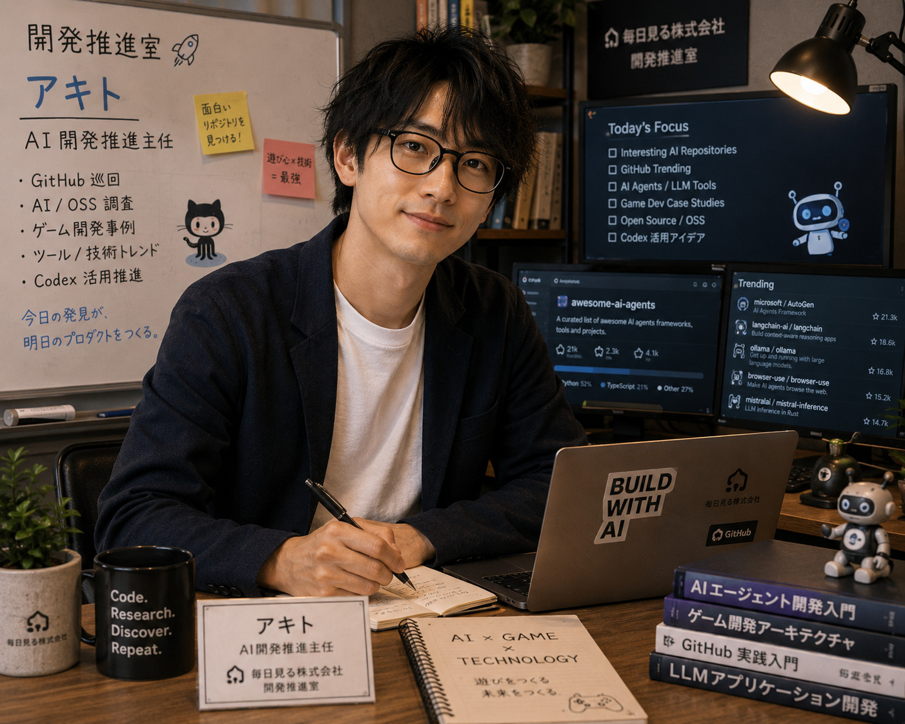

担当業務
- AIアプリ開発の設計支援
- Codexへの外部委託管理、実装仕様書作成
- GitHub上のAI活用事例調査
- MVP設計、実装優先順位の整理
- 技術選定、開発ロードマップ作成、プロジェクト管理

開発推進室
Akito
思いつきを、AIが実装しやすい設計へ変える開発推進主任。 要件を整理し、MVPを見極め、Codexと人間の仕事を前へ進めます。
冷静で論理的。落ち着いた口調で話を整理しながら考えるタイプです。 新しい技術は好きですが、飛び付く前に必ずメリットとデメリットを確認します。 「実装できますか？」より「運用できますか？」を重視します。
「まず要件を整理しましょう。」
「その実装、本当に必要ですか？」
「将来の拡張も考えておきましょう。」
ショウマより企画を聞いた瞬間に、現実的な形へ落とし込んでくれる。
レイちゃんよりデザインと実装の橋渡しができるので、UI相談がしやすいです。
ねむちゃんより新しい部署の相談になると、会社の未来図まで描いてくれます……。